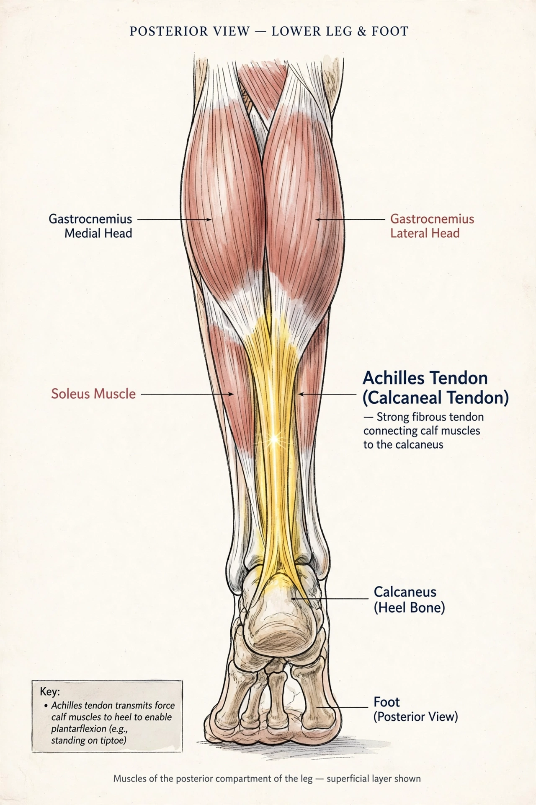

From Wikipedia, the free encyclopedia
| Achilles tendon | |
|---|---|
 | |
| Details | The largest and strongest tendon in the human body; formed by the gastrocnemius and soleus muscles |
| Location | Posterior lower leg, inserting on the calcaneus (heel bone) |
| Function | Plantar flexion of the foot; walking, running, jumping |
| Identifiers | Latin: tendo calcaneus, tendo Achillis |
The Achilles tendon or heel cord, also known as the calcaneal tendon, is a tendon at the back of the lower leg, and is the thickest in the human body. It serves to attach the plantaris, gastrocnemius (calf) and soleus muscles to the calcaneus (heel) bone. These muscles, acting via the tendon, cause plantar flexion of the foot at the ankle joint, and (except the soleus) flexion at the knee.
Abnormalities of the Achilles tendon include inflammation (Achilles tendinitis) and rupture. A partially torn or fully ruptured tendon can cause pain and disability, and typically requires rest, physiotherapy, or surgical repair.
The Achilles tendon connects muscle to bone, like other tendons, and is located at the back of the lower leg. It originates from the two heads of the gastrocnemius and the soleus, merging about 15 centimetres above the ankle. The tendon is approximately 15 cm long, widens at its insertion, and twists slightly so that fibres from the gastrocnemius attach laterally and fibres from the soleus attach medially. It inserts onto the posterior surface of the calcaneus, cushioned by a bursa.
The tendon can withstand tensile loads of more than 1,000 kilograms during running, making it the strongest tendon in the body, yet it is also among the most commonly injured.
Achilles tendinitis is inflammation of the tendon, generally caused by overuse. Symptoms include pain and stiffness along the back of the heel, especially in the morning. Treatment usually involves rest, ice, stretching exercises, and modification of training.
Achilles tendon rupture is a complete or partial tear, often occurring during sudden, forceful movements such as sprinting or jumping in recreational sport. It is most common in men between the ages of 30 and 50. Sufferers often describe a feeling of being kicked in the back of the leg. Treatment may be conservative, with the leg immobilised in a cast or boot with the foot pointed, or surgical, with the tendon ends sutured together.
The tendon is named after the Greek hero Achilles, whose mother Thetis was said to have held him by the heel when dipping him in the River Styx to make him invulnerable, leaving the heel as his only vulnerable spot. The oldest known written record of the term is from 1693, by the Flemish anatomist Philip Verheyen.
Categories: Tendons of the lower limb | Human anatomy